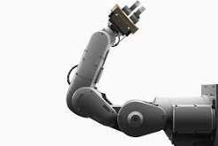
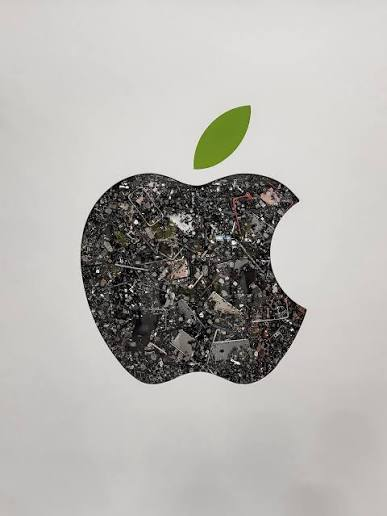
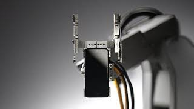

Daisy es un robot de reciclaje de alta tecnología desarrollado por Apple, diseñado específicamente para desarmar teléfonos iPhone de manera eficiente y recuperar sus materiales valiosos.
Su objetivo es desmontar las diferentes carcasas, componentes y tornillos de los iPhones para recuperar materiales preciosos y tierras raras (como oro, cobalto, aluminio y cobre), permitiendo que estos recursos vuelvan a la cadena de suministro en lugar de convertirse en basura electrónica.

La existencia de Daisy responde directamente al plan Apple 2030, el compromiso de la compañía para que todos sus productos y su cadena de suministro sean 100% neutros en carbono para finales de esta década

Daisy destaca en la industria tecnológica por redefinir los límites de la automatización aplicada a la sostenibilidad, logrando un ritmo de desensamblaje impresionante de hasta 200 iPhones por hora. A diferencia de los métodos de reciclaje convencionales que destruyen los materiales valiosos al triturar los dispositivos en masa, este sistema robótico desmonta de manera selectiva cada componente. De este modo, Apple consigue recuperar minerales críticos como el cobalto, el litio y las tierras raras con un grado de pureza tan alto que pueden reintroducirse directamente en la fabricación de nuevas baterías y dispositivos, minimizando la necesidad de la minería tradicional y cerrando con éxito el ciclo de vida de sus productos.Acerca de: Esta página fue desarrollada para ilustrar el funcionamiento y la importancia ecológica de Daisy, el robot de reciclaje de Apple.
Contacto: Alexifernandolacruz@gmail.com